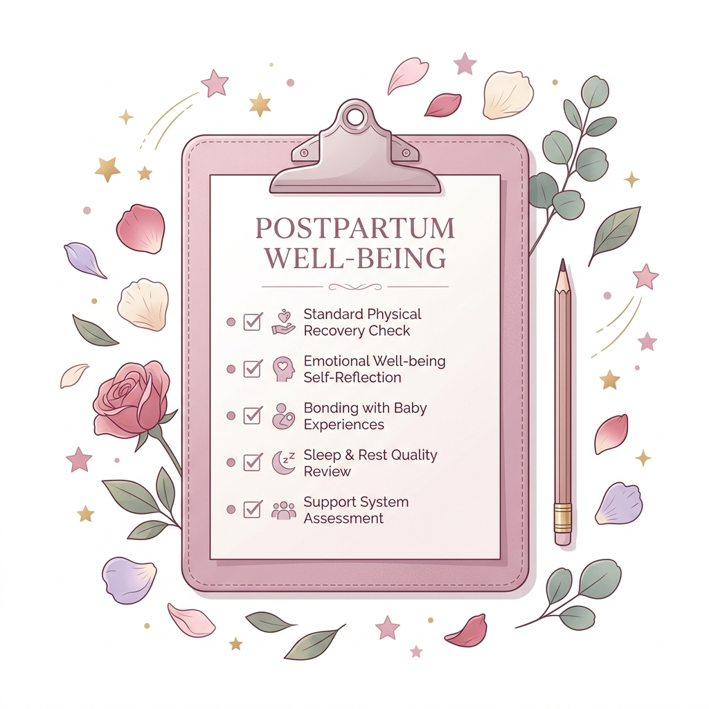

Conócete, comprende lo que sientes y da el primer paso hacia tu bienestar emocional.

El EPDS (Edinburgh Postnatal Depression Scale) es un cuestionario desarrollado en 1987 y validado internacionalmente, diseñado para identificar signos de depresión postnatal en madres durante el período posparto. Consta de 10 preguntas sobre cómo te has sentido en los últimos 7 días.
Esta herramienta no es un diagnóstico clínico. Sirve como un primer indicador orientador para buscar apoyo profesional si es necesario.
Los resultados no muestran señales significativas de riesgo de depresión postnatal en este momento.
Posible depresión leve. Se recomienda volver a realizar la prueba en dos a cuatro semanas.
Probable depresión postnatal. Es importante consultar a un profesional de salud lo antes posible.
Nota importante: Este test no sustituye una evaluación clínica. Si tu puntuación es alta o tienes pensamientos de hacerte daño, busca apoyo profesional de inmediato. No estás sola.
Responde las 10 preguntas y obtén tu puntuación para conocer cómo te sientes. Es completamente anónimo, sin registros.
Como parte de Bloomrise, ofrecemos el Emotional Journal: una herramienta de seguimiento emocional diseñada para ayudarte a reconocer cómo te sientes día a día. A través de registros sencillos y constantes, podrás identificar cambios en tu estado emocional.
Registra diariamente cómo te sientes.
Detecta ciclos y patrones emocionales.
Información útil para profesionales.
Un espacio para escribir y reflexionar.
¿Cómo te sientes hoy?
Selecciona el emoji que mejor represente tu estado de ánimo en este momento.
Pregunta 1 de 10
Durante los últimos 7 días...
...
Por favor selecciona una respuesta para continuar.
Escala de Depresión Posparto de Edimburgo (EPDS) — J.L. Cox, J.M. Holden, R. Sagovsky (1987).
Reproducida de la British Journal of Psychiatry. Solo orientativa, no sustituye diagnóstico clínico.